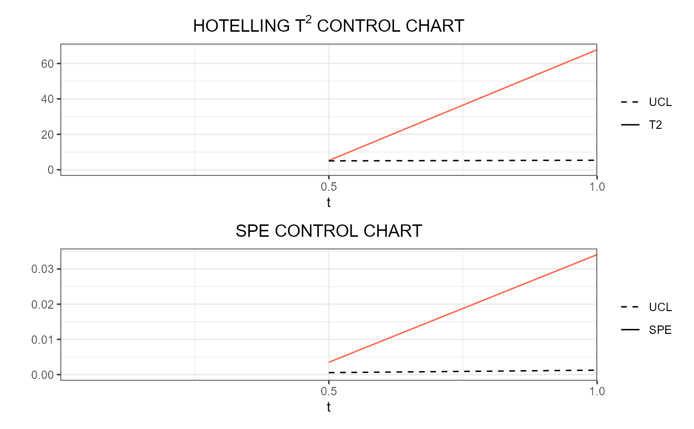

R/real_time_04_phaseII.R
regr_cc_sof_real_time.RdThis function builds a list of data frames,
each of them is produced by regr_cc_sof
and is needed to plot control charts for monitoring in real time
a scalar quality characteristic adjusted for
by the effect of multivariate functional covariates.
The training data have already been used to fit the model.
An additional tuning data set can be provided that is used to estimate
the control chart limits.
A phase II data set contains the observations to be monitored
with the built control charts.
regr_cc_sof_real_time(
mod_list,
y_new,
mfdobj_x_new_list,
y_tuning = NULL,
mfdobj_x_tuning_list = NULL,
alpha = 0.05,
parametric_limits = TRUE,
include_covariates = FALSE,
absolute_error = FALSE,
ncores = 1
)A list of lists produced by sof_pc_real_time,
containing a list of scalar-on-function linear regression models estimated
on functional data each evolving up to an intermediate domain point.
A numeric vector containing the observations of the scalar response variable in the phase II monitoring data set.
A list created using
get_mfd_df_real_time or
get_mfd_list_real_time, denoting a list of functional data objects
in the phase II monitoring data set,
each evolving up to an intermediate domain point,
with observations of the multivariate functional covariates.
The length of this list and mod_list must be equal,
and their elements in the same position in the list
must correspond to the same intermediate domain point.
An optional numeric vector containing the observations of
the scalar response variable in the tuning data set.
If NULL, the training data, i.e. the scalar response
in mod_list,
is also used as the tuning data set.
Default is NULL.
A list created using
get_mfd_df_real_time or
get_mfd_list_real_time, denoting a list of functional data objects
in the tuning data set (used to estimate control chart limits),
each evolving up to an intermediate domain point,
with observations of the multivariate functional covariates.
The length of this list and mod_list must be equal,
and their elements in the same position in the list
must correspond to the same intermediate domain point.
If NULL, the training data, i.e. the functional covariates
in mod_list,
are also used as the tuning data set.
Default is NULL.
See regr_cc_sof.
See regr_cc_sof.
See regr_cc_sof.
See regr_cc_sof.
If you want parallelization, give the number of cores/threads to be used when creating objects separately for different instants.
A list of data.frames each
produced by regr_cc_sof,
corresponding to a given instant.
library(funcharts)
data("air")
air1 <- lapply(air, function(x) x[1:8, , drop = FALSE])
air2 <- lapply(air, function(x) x[9:10, , drop = FALSE])
mfdobj_x1_list <- get_mfd_list_real_time(air1[c("CO", "temperature")],
n_basis = 15,
lambda = 1e-2,
k_seq = c(0.5, 1))
mfdobj_x2_list <- get_mfd_list_real_time(air2[c("CO", "temperature")],
n_basis = 15,
lambda = 1e-2,
k_seq = c(0.5, 1))
mfdobj_y1_list <- get_mfd_list_real_time(air1["NO2"],
n_basis = 15,
lambda = 1e-2,
k_seq = c(0.5, 1))
mfdobj_y2_list <- get_mfd_list_real_time(air2["NO2"],
n_basis = 15,
lambda = 1e-2,
k_seq = c(0.5, 1))
mod_list <- fof_pc_real_time(mfdobj_y1_list, mfdobj_x1_list)
cclist <- regr_cc_fof_real_time(
mod_list = mod_list,
mfdobj_y_new_list = mfdobj_y2_list,
mfdobj_x_new_list = mfdobj_x2_list)
plot_control_charts_real_time(cclist, 1)
